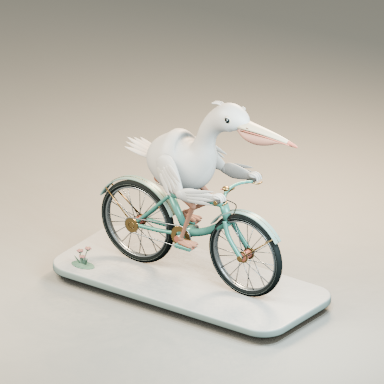
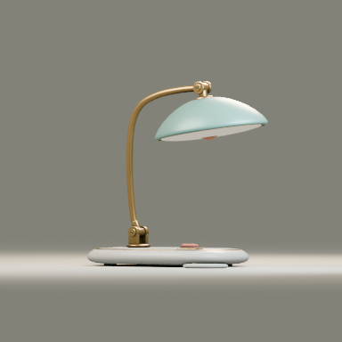
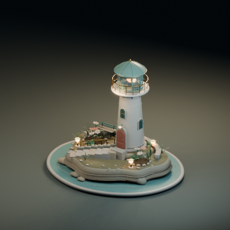

펠리컨 · 자전거

긴 부리와 목, 겹친 깃털, 자전거의 연결 구조가 잘 읽힙니다. 받침 전체 구도를 확보했고 웹 기본 시점을 조정했습니다. 다리의 체중 이동과 보조 동작은 아직 단순합니다.
Sol로 펠리컨·제품·환경 세 종류를 시험했습니다. 미술 방향 → 실제 3D 시안 → 화면 검토 → 선택 원본 수정 → GLB·이미지·영상·구조 조건 출력의 흐름을 구현했습니다. 새 소스, 스타일/재질/카메라, FPS와 프레임 범위를 바꿔 쓸 수 있습니다.

긴 부리와 목, 겹친 깃털, 자전거의 연결 구조가 잘 읽힙니다. 받침 전체 구도를 확보했고 웹 기본 시점을 조정했습니다. 다리의 체중 이동과 보조 동작은 아직 단순합니다.

얇은 타원 받침과 곡선 황동 지지대를 유지했습니다. 접지와 낮은 촬영 각도를 고쳤고, 새 각도에서 발생한 배경 경계선도 제거했습니다. 유리는 웹과 Blender에서 다르게 보입니다.

계단·문·식재·난간을 유지하고 흙·돌·잎의 구분과 저녁 등불을 조정했습니다. 중립 촬영에서는 밝은 재질끼리의 차이가 아직 약합니다.
| 출력 | 결과 |
|---|---|
| 최종 GLB 3개 | 단일 클립, 0–3초, Khronos 오류/경고 0 |
| 실제 WebGL | 세 모델 각각 3회 반복 경계 관측, 선택/일시정지/시점 이동 확인 |
| PNG·MP4·구조 조건 | 원본 .blend, 중립 다면·대표 장면, 3초 영상, 깊이·윤곽·객체 마스크 |
| 새 소스 API | 8fps·2초와 시작 프레임 9인 별도 범위 검증 |
| 검증 메시지 분량 | 상세 검증 CLI 약 89% 감소, 원 자료는 파일 보존 |
기본 컬렉션은 종류별 대표 8개만 보여줍니다. 실험실에는 새 시험 버전 9개를 추가했고 기존 펠리컨 26개는 보존했습니다.
평가는 제작 과정을 아는 AI 매니저의 실제 화면 판단입니다. 독립 인간/블라인드 선호, 세 미사용 과제로의 미적 전이, 생성 AI 이미지/영상 효과는 검증하지 않았습니다. 세 어셋과 관련 출력은 독립 표본 9개가 아닙니다. 제작 예산이 달라 미적·토큰 효율의 인과적 우월성을 주장하지 않습니다. 89%는 검증 출력 바이트의 감소이며 전체 제작 토큰 감소가 아닙니다.
Blender 절차적 재질과 유리는 웹 PBR에서 다르게 보일 수 있습니다. 초기 GPU 진단의 절차 오류와 첫 프리셋의 연결 실패도 원 로그에 보존했고, 최종 렌더는 실제 llvmpipe를 확인했습니다. 별도 워커 브라우저의 연속 재생 오류는 기록한 뒤 매니저 브라우저에서 세 모델 모두 다시 관측했습니다.